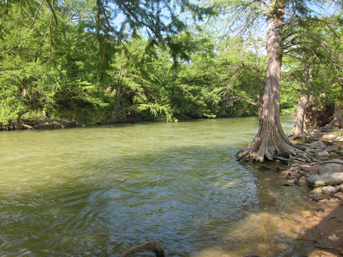

Protection or Revegetation of Native Species
What is it?
Native species protection or restoration is imperative in maintaining healthy and functional riparian areas. Native species are suited to their watersheds, require no or little maintenance, and are effective stream bank stabilizers. Native species also provide important wildlife and fish habitat.
 Native riparian species (photo from TPWD)
Conservation Benefits
- Erosion control
- Stormwater filtration and infiltration
- Improved wildlife, bird, and fish habitat
- Increased site aesthetics
- Requires no (or little) maintenance
What does it include?
Protection or restoration of native species can be implemented through many BMPs depending on the site and objective. Technical experts should be consulted to assist with determing the most effect BMPs to protect or restore vegetation or select species best suited to the area and objective.
Protection of native species can be implemented through BMPs including
- Communication (like signs posted in high traffic areas)
- Conservation ordinances
- Designating trails and access points in the riparian zone
- Establishing a riparian buffer zone
- Fencing riparian areas
- Riparian setbacks
- TPWD Landowner Incentive Program
- Watershed Conservation Plans
Restoration of native species can be implemented through BMPs including
Protection or Revegetation of Native Species Links
- Native grassland training (City of Austin, Texas)
- Native revegetation - grasses, legumes, and forbes (NRCS)
- Native revegetation - trees and shrubs (NRCS)
- Plant materials for western riparian areas (NRCS)
- Restore native plant communities for wetland areas (p.27; TCEQ)
- Riparian restoration (Chesapeake Bay Foundation)
- Riparian restoration (Virginia Institute of Marine Science)
- Your Remarkable Riparian
Texas Native Species Links